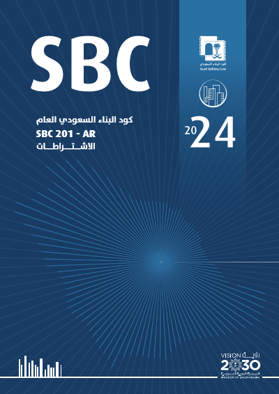
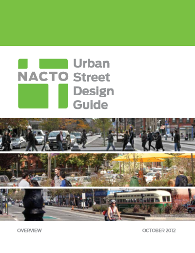
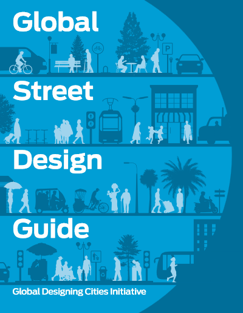
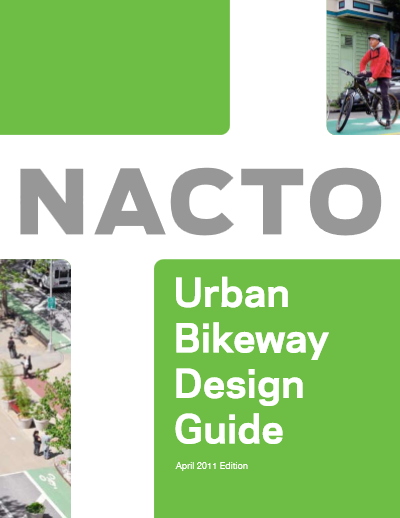
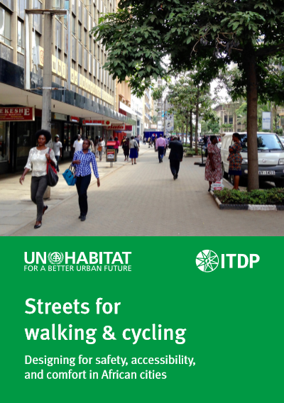

تعتمد منصة أنسنة المنطقة الشرقية في معاييرها الهندسية وحساباتها الحضرية على الأطر والمبادئ الصادرة عن وزارة البلديات والإسكان، بالإضافة إلى أفضل الممارسات والتوجيهات من الأدلة العالمية المتخصصة في مجالات التصميم والتخطيط الحضري.
الأدلة والمعايير الوطنية والمحلية

كود البناء السعودي العام (SBC 201)
الكود الفني الأساسي والملزم للتصميم والتشييد وضمان السلامة الإنشائية والصحية واستدامة المباني والفراغات المحيطة بها في المملكة.

الدليل الإرشادي الوطني للتصميم الحضري
دليل فني وطني يهدف لتحسين المشهد الحضري بالمملكة، وتطوير الشوارع وتنسيق المواقع وفق موجهات أنسنة المدن وجودة الحياة.

كتيب المجال العام: التدخلات الحضرية والحدائق - V1
كتيب عملي يوضح متطلبات تصميم وتطوير الفراغات المفتوحة والحدائق العامة وتطبيق معايير التدخل الحضري والوصول الشامل.

كتيب المجال العام: التدخلات الحضرية والحدائق - V2
النسخة الموسعة لكتيب المجال العام المخصصة لعروض التصميم وموجهات تنفيذ الفراغات العامة والأرصفة والمناطق المفتوحة.

الموجهات التصميمية لعمارة الساحل الشرقي
المعايير والموجهات الفنية لتأصيل الطابع البصري المعماري المميز للساحل الشرقي للمملكة في الفراغات والمباني.

دليل التشجير الحضري في المنطقة الشرقية
الدليل التنفيذي المتكامل لاختيار وتوزيع وري أنواع الأشجار والنباتات الملائمة لشوارع وحدائق المنطقة الشرقية.

الدليل الاسترشادي للتشجير في البيئات الجافة
دليل فني وطني يركز على معايير التشجير الفعال الموفر للمياه والمتناسب مع المناخ الجاف في مختلف مدن المملكة.
.png)
المبادئ التوجيهية لتخطيط وتطوير المرافق الرياضية للحدائق
المعايير التخطيطية لتطوير الأماكن الرياضية وملاعب المشاة وأجهزة اللياقة البدنية في الحدائق العامة لتعزيز النشاط البدني.

دليل تصميم مواقف السيارات (نوفمبر 2023)
الاشتراطات والمعايير التخطيطية المعتمدة لحساب عروض ومساحات مواقف السيارات الطولية والمائلة والعمودية.

دليل إنارة الشوارع والميادين العامة
الاشتراطات الهندسية ومستويات الإضاءة المطلوبة لتأمين الميادين وممرات المشاة ليلاً مع توفير الطاقة والتصميم المستدام.
الأدلة والمعايير العالمية

Urban Street Design Guide
الدليل المرجعي العالمي لتصميم الشوارع الحضرية الصديقة للمشاة، وتطوير الحارات المرنة وتهدئة الحركة المرورية.

Global Street Design Guide
الدليل العالمي الأشمل لتخطيط وتصميم الشوارع بما يراعي السلامة المرورية للأطفال والمشاة وتعزيز حيوية الأرصفة العامة.

Urban Bikeway Design Guide
المرجع العالمي المتكامل لتصميم مسارات الدراجات الحضرية المحمية، والتقاطعات المخصصة لراكبي الدراجات، وإشارات العبور.

Streets for Walking and Cycling
دليل تصميم وتخطيط الشوارع لتمكين النقل النشط والمشي وركوب الدراجات، وتقليل الانبعاثات الكربونية في المناطق الحضرية.